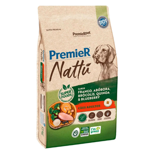

Ração Premium para Cães

- Preço
- R$ 274,90
- Marca
- Premier Nattu
- Peso
- 12 kg
- Indicação
- Cães adultos de médio e grande porte
- Sabor
- Frango, Abobora, Brócolis, Quinoa e Blueberry
- Composição
- Farinha de vísceras de frango (25%), glúten de milho (não transgênico), ovo em pó, grão de sorgo, quirera de arroz, complexo de vegetais – 10,0% (abóbora, aveia, brócolis desidratado, extrato de marigold (Tagetes erecta), grão de quinoa, mirtilo (blueberry), polpa desidratada de beterraba), gordura de frango, óleo refinado de peixe, cloreto de potássio, cloreto de sódio, antioxidante natural (concentrado de tocoferóis, extrato de alecrim, extrato de chá verde, extrato de menta, hortelã – mín. 0,05%), bentonita, extrato de yucca, hidrolisado de fígado de aves e suíno, L-carnitina, parede celular de levedura, parede celular de levedura (fonte de beta-glucanas), taurina, vitamina A, vitamina B1, vitamina B2, vitamina B3, vitamina B5, vitamina B6, vitamina B7, vitamina B9, vitamina B12, vitamina C, cloreto de colina, vitamina D3, vitamina E, vitamina K3, ferro aminoácido quelato, iodato de cálcio, manganês aminoácido quelato, selenometionina hidroxi análoga, sulfato de cobre pentahidratado, sulfato de ferro, sulfato de manganês, sulfato de zinco monohidratado, zinco aminoácido quelato